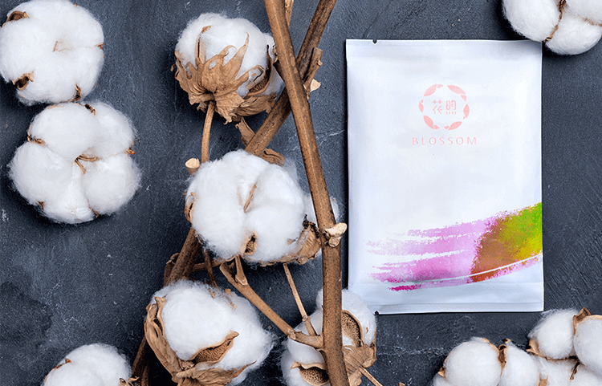
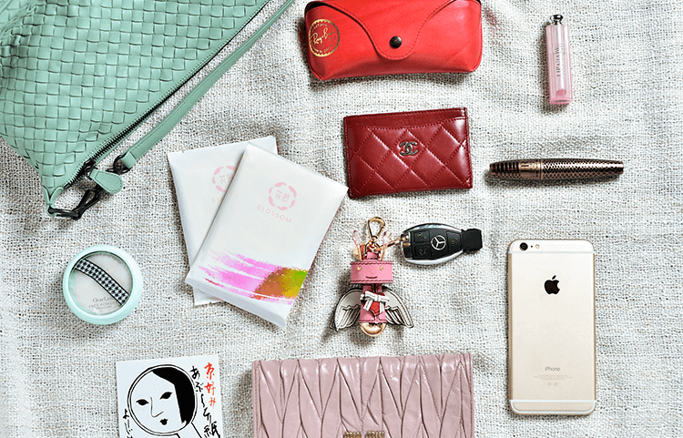

花煦：让买卫生巾充满幸福感
花煦的名字，源自英语Blossom，繁花盛开，群芳兴旺。我们相信每一个女人都是盛开的花朵，应该拥有最贴心呵护
因为容易忽略，所以习惯将就——全球83%的女性患有不同程度的妇科疾病，而其中的63％是由于使用劣质卫生巾造成的，在中国，这个数字是70%。
随着工作、学习、生活节奏的加快，年轻女性用户在采购卫生巾时习惯性的囤货造福了大批量生产的厂商和看不到的细菌繁衍，而急救型的匆忙购买成就了趁虚而入的黑心品牌。在这样的背景下，花煦的种子开始萌发，本着“要做就做最好”的想法，以产品为先，研发一款最天然纯净的护理产品，不让品牌出生在低端的代工厂。
2014年底，花煦的极致理念得遇知音，有了雄厚的技术支持，花煦迎风绽放：顶级原料，高度定制成就了品牌的精髓。

天然——万分之一的有机来源
有机棉：与肌肤接触的第一层纯棉材料，是来自美国得克萨斯州海岸产区，被誉为“棉花中的爱马仕”的有机棉，产量仅占全球棉产量的0.008%［十万分之八］。目前该产区的有机棉经过美国农业部严苛的有机认证［USDA Organic］和美国有机交易协会认证［OE 100 Standard］：产品有机成分需要超过70%才能得到认证；95%以上，方可在包装上标有USDA ORGANIC的认证标章。
纯净——零添加的细心保障
面层：天然的有机棉经过韩国J2LOH公司最优质纯净的加工，不添加任何荧光剂及其他漂白制剂。
芯体：核心层面的吸水高分子喷涂技术，由日本住友精华公司原装进口（日本原产花王卫生巾供应商）。普通高分子——颜色发黄，吸水倍率差，且吸水后易连接成块；花煦芯体采用的高分子——颜色晶莹剔透，吸水倍率高出普通高分子2倍，且锁水牢。
无荧光剂：花煦全面禁用荧光剂，用纯净面层的原料坚持和对成品的严格检验，保证了荧光剂的零添加。追求极致的花煦，将行业的安全和纯净也做到了极致，包括背胶在内的涂层和所有其他材质，也都经过同样严格的检验，不含任何荧光剂。
安全——360度的防菌卫生
导流槽：面层上的导流槽，经过精心的双层环绕式设计，柔软贴身，3倍防侧漏，2倍防后漏，柔软贴身的360度防护。
底膜：单向透气底膜技术，防止水分渗透的同时，不阻碍空气进入，0反渗的同时保障极致干爽，有效抑制细菌产生。
包装：花煦采用全包裹式小包膜包装，即用一层密度较低的半透明无纺布浆产品将巾体全方位包裹包装，比普通的半包裹方式更加卫生，防菌效果提升30%，有效阻止空气中的细菌渗入。

女性护理用品，既是女性基本的生理需求，也是最高层次的自我实现需求。太多的品牌止步于满足消费者最基本的生理需求，并告诉自己这就是极致。通过对市场和消费者的用心洞察，花煦将互联网＋模式引入女性护理市场，旨在用一年甚至更久的时间里，用心打造成“另一边”的品牌，用顶级原料和高度定制，帮助消费者实现更高层次的需求。